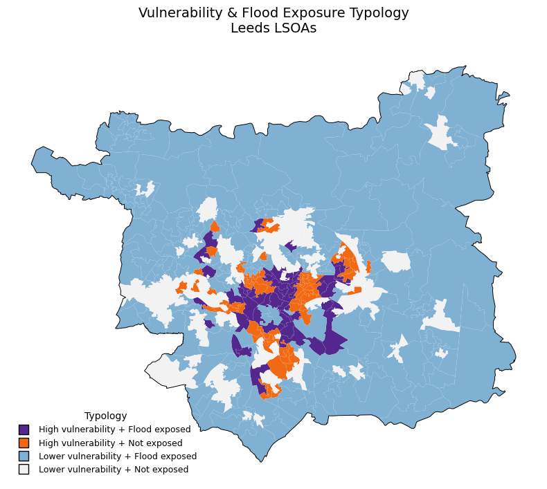

Environmental Risk
Leeds Flood Risk And Social Vulnerability
This project explores how flood monitoring infrastructure, flood communication areas and social vulnerability interact across Leeds.
Python · GeoPandas · Folium · Environment Agency API
Open Case Study